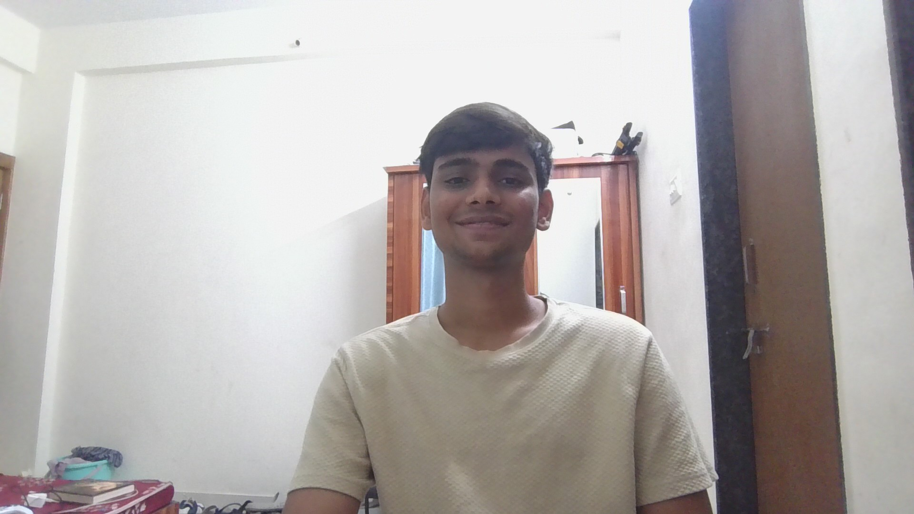

💻 About Me :

- Hi! I’m Aman , a passionate and detail-oriented Web Developer with a strong foundation in front-end and back-end development. I specialize in creating responsive, user-friendly websites and web applications that blend functionality with great design.
🔧 Technical Skills:
Languages:
- HTML
- CPP
- PYTHON
- C-Language
🚀 What I Do:
- Build dynamic, mobile-first websites
Integrate APIs and backend services
Optimize performance and SEO
Collaborate in teams using Git & Agile methodologies